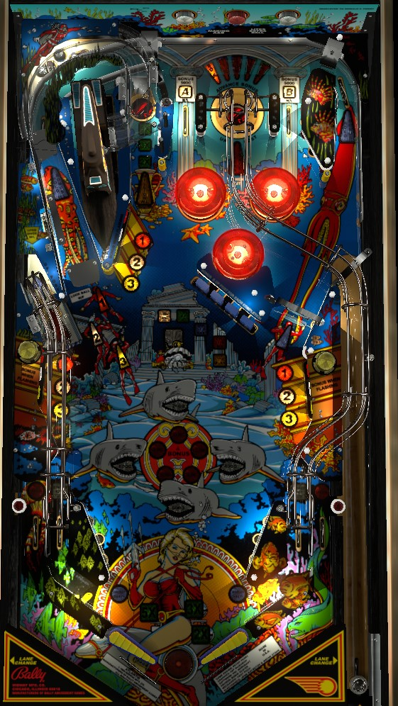

Not to be confused with the electromechanical game Atlantis (Gottlieb, 1975).
Shoot orbits to complete sets of A-B lanes and increase the top right saucer kickout value from 50,000 up to a possible 500,000. Hit all three flashing targets of a number to light lock at the left orbit; lock 3 balls to start multiball, where jackpot is on the flip ramp in the lower left. Complete the center drop targets repeatedly to lit the in lanes for bonus advance, the top left saucer for bonus multipliers, the orbits for hold bonus, an extra ball, and a 1,000,000 point shot at the top left saucer.
The below image of Atlantis' playfield was taken from the VPX recreation by herweh.
A full plunge goes to the top right of the table, where there are two top lanes with a saucer in between them. The top lanes are labelled A and B; roll through a lit lane to unlight it. Lit lanes score 5,000 points and a bonus advance. Unlit lanes score 1,000 points only. Lane change can be used with either flipper to switch which lane is lit if there is only one left.
The upper right saucer, positioned between the top lanes, scores the current saucer award and send the ball down a habitrail to the right in lane. The saucer award starts each ball at 50,000 points, and each completion of A-B adds 25,000 to the saucer value. Advancing the saucer value past 450,000 causes it to jump to, and max out at, 500,000. Advancing the saucer value up to 150,000 also lights the upper right saucer for extra ball, if there has not already been an extra ball collected during the current ball in play.
There are 3 banks of standup targets around the game: lower left, lower right, and upper left. Each bank has 3 targets, labelled 1, 2, and 3. At first, all of the 1 targets will be flashing. Hit a flashing target to light it solidly. Flashing targets score 10,000 points and a bonus advance. Any other standup target scores 3,000 points and no bonus. Solidly lighting all 3 targets of the same number lights a lock at the left orbit and increases the multiball jackpot by 100,000 points, up to a maximum of 4,000,000. Lock 3 balls to start multiball; the second and third locks require completing the #2 and #3 targets in the same way.
There are 2 ways to spot standup targets: shooting the upper left saucer spots 1 single target, and shooting the flip ramp in the lower left within 5 seconds after going through either in lane scores 50,000 points and completes the entire current flashing number set and lights a lock.
In multiball, the jackpot is available at the flip ramp in the lower left. The jackpot cannot be raised during multiball, and there is only one jackpot available per multiball. Jackpot starts at 500,000 points, increases by 100,000 each time a lock is lit, carries over across players and games, maxes out at 4,000,000 points, and resets to 500,000 once collected. The only other multiball-specific scoring feature is that if you hit all 9 standup targets around the game during a single multiball, the out lanes will be lit alternately for Special. If Special is not meaningful to you, then after collecting the jackpot, use multiball to shoot orbits and complete A-B sets and upper right saucer awards, or use multiball to shoot the rather dangerous center drop targets to light awards around the playfield with the safety net of an additional ball in play.
Each drop target down in the center bank scores 5,000 points. Completing the bank scores an additional 25,000 points and 1 bonus advance as well as scoring and advancing the currently lit award.
If the 1,000,000 shot is collected, any further completions of the drop targets just score the 25,000 point completion bonus. If the 1,000,000 shot has not been collected on the current ball and times out, completing the drop targets again relights the 1,000,000 shot (again for only 6 seconds). On the final ball of the game, the first 2 completions of the drop targets are spotted for you, meaning the in lanes and bonus multipliers are lit for free; on every other ball, you must start the drop target completion process from scratch.
Scores 100 points per spin, or 1,000 per spin for 10 seconds after the ball rolls through either in lane. Not meaningful.
Atlantis has a conventional in/out lane setup. In lanes score 5,000 points when not lit, or 10,000 plus a bonus advance when lit, and are lit by completing the center drop targets once. Out lanes score 25,000 points and are alternately lit for Special by hitting all 9 standup targets within a single multiball.
There is a center post that briefly blocks the entire center drain as a reward. The post is NOT raised at the beginning of each ball as a ball saver, but it IS raised for a few seconds after making the upper right saucer, completing the center drop targets, or shooting the flip ramp in the lower left. It is possible to drain underneath a raised flipper while the center post is still up.
Each advance of the base bonus is worth 2,000 points instead of the conventional 1,000. Bonus is advanced by completing the drop targets, shooting the upper right saucer, hitting a flashing standup target, making a lit A-B lane, making a lit in lane, and possibly other things that I've somehow missed. Base bonus maxes out at 170,000 points. After the center drop targets have been completed twice on a ball, or as soon as the final ball of the game starts, the next three shots to the upper left saucer will increase the bonus multiplier to 2x, then 3x, then the maximum of 5x. Max bonus, then, is 5x 170,000 = 850,000 points. There is no mid-ball bonus collect. Bonus multiplier is never carried over from ball to ball. Base bonus is only carried over to the next ball by shooting an orbit when Hold Bonus is lit, which happens after completing the center drop targets 3 times on a single ball (or once on the final ball). Bonus advances are uncommon enough that end of ball bonus tends not to be a significant portion of scoring, and maxed-out bonuses are very rare.